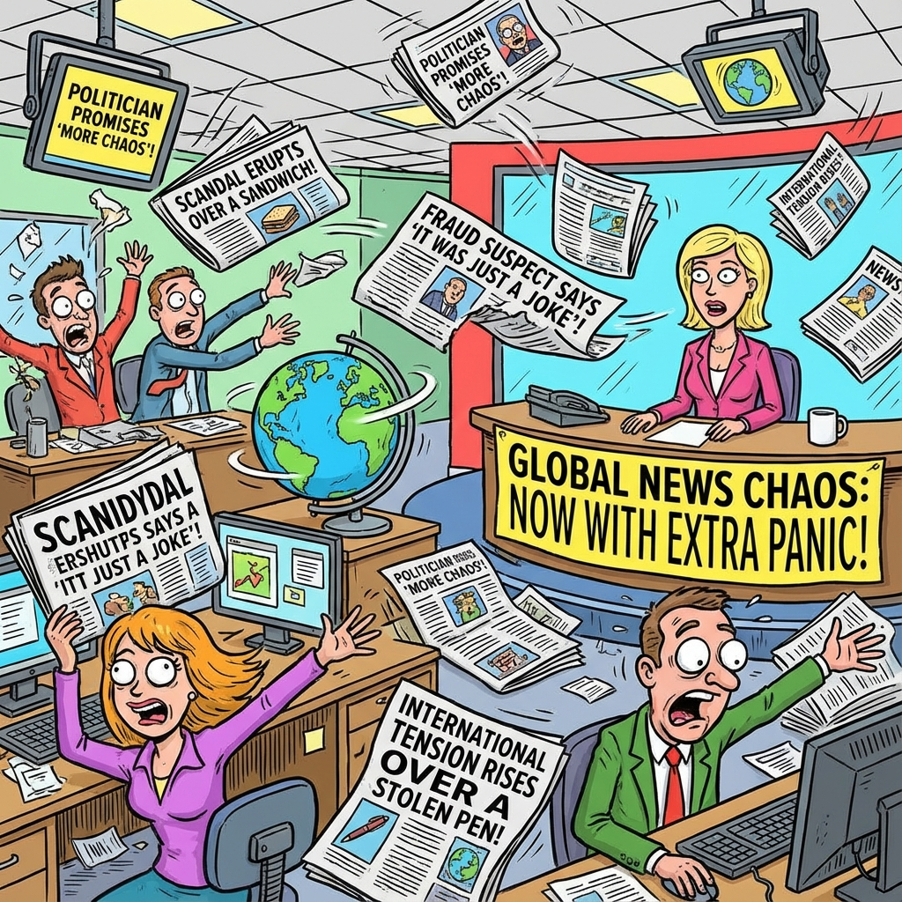

The Daily Globe: Capture of Venezuelan President Nicolás Maduro, U.S. Military Operation Captures Maduro, and Escândalo no Ministério da Educação (MEC)
Published on 2026-01-05

World
- Capture of Venezuelan President Nicolás Maduro
US forces allegedly capture Maduro in Caracas, sparking worldwide protests accusing the US of orchestrating regime change while supporters hail it as justice for election fraud.
- Renewed Epstein Files Scandal Involving Trump
Fresh documents link Trump Model Management and Mar-a-Lago to Epstein's sex trafficking operations, reigniting calls for full disclosure.
- Somali Fraud Scandal in Minnesota
Court documents expose millions in US taxpayer dollars laundered by Somali immigrants for luxury properties in Kenya.
- Coup Attempt in Burkina Faso
Attempted nighttime coup against Captain Ibrahim Traoré met with massive citizen mobilizations in support amid regional instability.
USA
- U.S. Military Operation Captures Maduro
Raid on Venezuela draws shock, outrage, and UN Security Council convening over gunboat diplomacy concerns.
- Errol Musk Predicts U.S. Collapse Due to Demographics
Elon Musk's father forecasts America's downfall as white population becomes minority, downplaying South African racism.
- Mississippi $77M Taxpayer Fraud Scandal
WWE stars implicated in welfare fraud scheme with millions missing.
- Rep. Crockett Calls Murder Victim 'Random Dead Person'
Congresswoman dismisses victim of illegal immigrant killer in heated immigration debate.
Brazil
- Escândalo no Ministério da Educação (MEC)
Major corruption or mismanagement scandal in Brazil's education ministry, accused of being underreported by media.
- Reações ao Interferência dos EUA na Venezuela
Brazilian discourse on protests supporting Maduro and alleged Chinese funding of anti-US rallies.
- Escândalos Esquecidos: Presos do 8 de Janeiro, INSS, Banco Master
Calls to remember political prisoners, pension fraud, and banking scandals.
- Corrupção Recorrente: Petrolão, Mensalão, Lulinha
Revival of historical PT-linked corruption cases amid current political tensions.
Topic Index
- Venezuela
- Maduro arrest
- US intervention
- Epstein scandal
- Trump connections
- Somali fraud
- taxpayer laundering
- Burkina Faso coup